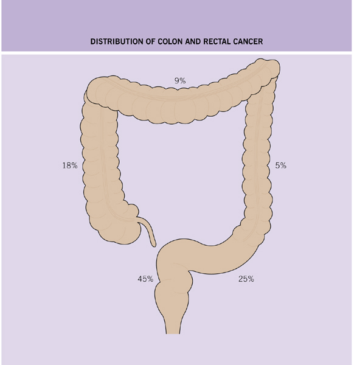
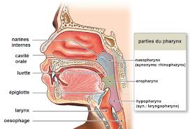

Les stomies digestives
Definition
Les
differentes stomies digestives
Indications
Les differents
sites operatoires des stomies
Materiels
Realisation du soin
Risques et
complications
Surveillances et
evaluations
Definition
La stomie digestive est un abouchement chirurgical temporaire ou
permanent e la paroi abdominale anterieure d'un segment de l'appareil
digestif.
La
stomatherapie est
une maetrise des connaissances techniques et des principes de relations
d'aides, qui vont permettre au stomise de retrouver son autonomie le
plus vite possible.
Comme
toutes
personnes mutilees, le stomise est un etre souffrant dans son corps
physique, psychique et spirituel.
La
realisation d'une stomie a pour consequence :
- La perte du contrele volontaire de
l'exoneration des matieres fecales ou des urines.
- L'alteration de l'image corporelle.
Il s'agit
d'un soin infirmier sur rele
propre : art. R.4311-5 decret 2004-802 du 29/07/2004.
Les
differents stomies digestives
Colostomie
Le celon
Le rele du celon consiste surtout e reabsorber l'eau des selles et,
accessoirement, e digerer quelques aliments fibreux. Apres leur passage
dans l'intestin grele, les selles arrivant dans le celon sont liquides
; puis, au fur et e mesure de leur progression dans le cadre colique,
elles s'epaississent.

La colostomie
La colostomie est l'abouchement chirurgical du celon e la paroi
abdominale afin d'assurer de recueillir le transit intestinal.
La qualite
des selles evacuees par la stomie est fonction du siege de celle-ci :
- Colostomie transverse droite : selles
semi-liquides voire peteuses.
- Colostomie gauche : selles solides.
 |
|
 |
|
 |
| Colostomie transverse droite |
|
Colostomie transverse gauche |
|
Colostomie gauche |
Ileostomie
L'ileon
L'ileon
est la partie terminale de l'intestin grele, il s'abouche dans le gros
intestin.
L'ileostomie
L'ileostomie est l'abouchement chirurgical d'une anse ileale e la paroi
abdominale afin d'assurer de recueillir le transit intestinal.
- Selles liquides et abondantes : il n'y a
pas de reabsorption de l'eau des selles dans la partie de l'ileon.
 |
| Ileostomie |
Gastrostomie
La gastrostomie est l'abouchement chirurgical de l'estomac e la peau,
ce qui permet l'introduction d'une sonde entrant par le ventre et
allant directement dans l'estomac pour effectuer une
alimentation enterale.

Jejunostomie
La gastrostomie est l'abouchement chirurgical du jejunum e la peau, ce
qui permet l'introduction d'une sonde entrant par le ventre et
allant directement dans l'intestin, au
niveau du jejunum pour effectuer une alimentation
enterale.

Indications
Colostomie
- Colostomie temporaire :
- Protection d'une anastomose.
- Occlusion.
- Mise au repose d'une partie de
l'intestin.
- Pathologies infectieuses : peritonite
due e la perforation du celon.
- Pathologies inflammatoires du celon et
du rectum.
- Colostomie definitive :
- Pathologies malignes : tumeurs.
Ileostomie
- Ileostomie temporaire :
- Protection d'une anastomose ileorectale
ou ileoanale, attente de guerison.
- Ileostomie definitive :
- Rectocolite hemorragique.
- Pathologies benignes : polypose
adenomateuse, carcinomes multiples.
- Traumatisme du celon et du rectum.
Les
differents sites operatoires des stomies
Afin d'eviter les complications post-operatoires dues e une
localisation de la stomie, il est recommande de reperer au prealable le
meilleur endroit possible en fonction de l'intervention prevue par le
chirurgien et selon certains criteres :
- A distance des cicatrices deje
existantes ou prevues.
- A distance de l'ombilic.
- A distance des reliefs osseux (epine,
iliaque antero-superieure, pubis)
- Dans la limite des muscles grands-droits
de l'abdomen (ceux-ci se situent sur une ligne allant de la pointe des
seins au pubis).
- En dehors de tout pli cutane important.
- De faeon e etre visible par le patient
dans au moins une position (debout, assis, couche).
- En tenant compte d'un eventuel handicap.
- Afin d'eviter tout risque d'effaeage,
une fois le reperage fait, injecter une goutte de bleu de methylene en
intradermique.
Materiels
- Systeme de recueil en poche :
- Colostomie gauche :
- Systeme
1 piece (socle + poche) : non sterile, transparent et equipe d'un
filtre et systeme de prevention antigonflement de la poche.
- Colostomie droite :
- Systeme 2 pieces vidable :
- Socle avec systeme de verrouillage de
securite click audible.
- Poche non sterile, transparente et
equipee d'un filtre et systeme de prevention antigonflement de la poche.
- Ileostomie :
- Systeme 1 piece vidable (socle + poche),
non sterile, transparent, avec vidange.
- Systeme 2 pieces vidable :
- Socle avec systeme de verrouillage de
securite click audible.
- Poche non sterile, transparente, avec
vidange.
- Ciseaux.
- Cuvette, eau tiede.
- Savon neutre.
- Gant de toilette.
- Compresses non steriles.
- Gants non steriles e usage unique.
- Protection pour le lit.
- Sac e elimination des dechets.
- Desinfectant de surface et chiffonnette.
Realisation
du soin
- Prevenir le patient.
- Installer confortablement le patient en
decubitus dorsal.
- Mettre une protection sous le patient.
- Effectuer un lavage simple des mains.
- Mettre les gants non steriles.
- Enlever la poche souille :
- Maintenir la peau.
- Enlever la poche, du haut vers le bas.
- Quantifier les selles.
- Nettoyer
la stomie avec le gant de toilette, de l'eau et du savon : une stomie
se nettoie de la meme faeon que l'on nettoie un anus lors de la
toilette.
- Rincer abondamment.
- Secher le pourtour de la stomie par
tamponnement avec des compresses non steriles seches.
- Jeter les gants.
- Mesurer le diametre de la stomie e
l'aide des dessins du socle.
- Decouper la partie adhesive du socle :
ajouter 5 mm au diametre mesure.
- Coller le socle en veillant e ne pas
recouvrir une partie de la stomie.
- Fixer la poche sur le socle.
- Effectuer un lavage simple des mains.
- Reinstaller le patient.
- Ranger, jeter et desinfecter tout le
materiel utilise.
- Transmission : quantite des selles,
aspect de la stomie, etat cutane au pourtour de la stomie, reaction du
patient.
Risques
et complications
Complications et incidents de la stomie
- Ischemie, necrose : stomie cyanose,
odeur nauseabonde : retour au bloc.
- Desinsertion : stomie pas ou peu visible
: retour au bloc.
- Hemorragie : sang dans la poche,
suintement : retour au bloc.
- Evisceration : exteriorisation des anses
du grele : champ sterile et serum physiologique.
- Abces peritoneal : oedeme, ecoulement,
douleur, fievre.
- Fistule : berges et suture infectees :
soins locaux.
- Occlusion : arret du transit (gaz et
selles) : avis chirurgical et anesthesique.
- Peritonite : avis chirurgical et
anesthesique.
- Irritation cutanee : erytheme : soins
locaux.
Consequences de l'ileostomie
- Debit
d'environ 1 L/ 24h : fuite hydrosodee, risque de lithiase renale par
acidose hyperchloremique : faire boire beaucoup d'eau.
- Ablation de la derniere anse ideale :
- Carence en vitamine B12 : risque
d'anemie de Biermer.
- Carence en sels biliaires : risque de
lithiase vesiculaire.
- Augmentation de la concentration en
enzymes pancreatiques : risque de problemes cutanes par proteolyse en
cas de fuite.
Alteration de l'image corporelle
- Phase de negation : le patient pense que
ce n'est pas possible, pas e lui.
- Phase de reprise de conscience de la
perte de la fonction d'exoneration.
- Phase de tristesse, voire de depression
majeure.
- Phase de recuperation donc phase de
l'acceptation.
Surveillances
et evaluations
- Aspect de la stomie.
- Efficacite de l'appareillage.
- Etat cutane.
- Transit : gaz, selles.
Voir aussi :

 haut
de page
haut
de page